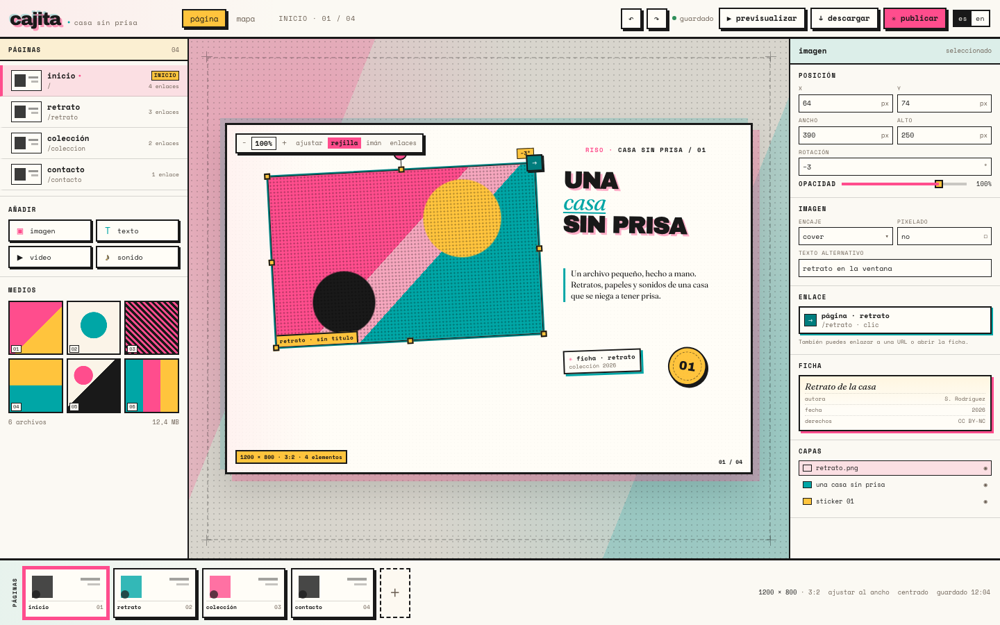

a · tema por defecto
Riso print shop
Tintas fluorescentes, semitono, marcas de registro y papel cálido. Es la dirección con más carácter propio; el escenario se siente como una hoja impresa, no como un panel de administración.
abrir mockup →